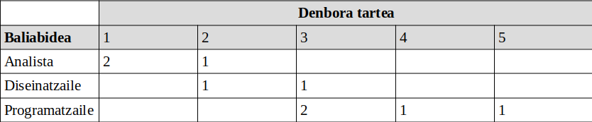
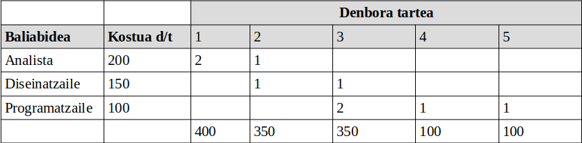
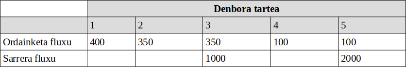
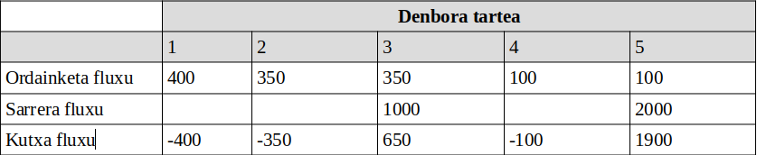
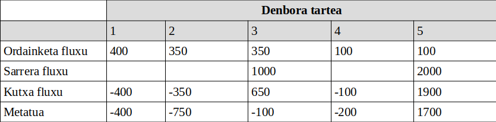

Ebaluaketa Ekonomikoa
Mikel Egaña Aranguren
Helburua
Proiektuaren planifikazioa egin dugunez, badakigu:
- Zer egingo dugun
- Nork egingo duen
- Noiz egingo duen
- Zein baliabide behar ditugun
Helburua
Baina oraindik ez dakigu:
- Zenbat kostatuko zaigun
- Nola erabiliko dugun dirua
Zergatik?
- Dirua garrantzitsua da enpresa munduan
- Gure proiektuak testu-inguru horretan garatzen dira
- Enpresek hainbat proiektu dituzte, eta kostua aukeraketa irizpide bat da
Abiapuntua
- Proiektuaren programazioa daukagu
- Une bakoitzean zein baliabide aplikatzen diren dakigu
Ebaluaketa Ekonomikoa
- Kutxa-fluxuaren kalkulua
- Finantza-azterketa
Kutxa-fluxuaren kalkulua
- Baliabide bakoitzaren kostua kalkulatu
- Ordainketa-fluxua kalkulatu
- Sarrera-fluxua kalkulatu
- Kutxa-fluxua kalkulatu
- Metatutako kutxa-fluxua kalkulatu
Finantza-azterketa
- Konprometitu beharreko funtsak
- Kutxa-fluxuaren eguneraketa
Proiektuaren kostuak
- Zuzenak: dudarik gabe proiektuarenak izan direnak (Lan ordu kopurua, kontsumitutako suntsikorrak, ...)
- Ez zuzenak: zaila da jakitea zein neurritan izan duten eragina proiektuan, enpresaren gastu finkoak izaten dira (Elektrizitatea, enpresako telefonista, ...)
Baliabide bakoitzaren kostua
- Proiektuaren kostu guztiak eduki behar dira kontuan:
- Kostu zuzenak jakitea erraza da
- Kostu-ez zuzenen ponderazioa egiten da
- Horrela, adibidez, garatzaile bakoitzaren kostuaren batezbesteko balorazioa edukiko dugu eta ez bakarrik bere kostu zuzena
Proiektu baten kutxa-fluxuaren kalkulua
- Zehaztu noiz ordaintzen den: egunero, astero, hilabetero
- Zehaztu denbora tarte horretan behar diren baliabideak (sarrera bikoitzeko taula): baliabidea, denbora tartea
Proiektu baten kutxa-fluxuaren kalkulua

(Adibidez: 3. denbora tartean diseinatzaile bat eta bi programatzaile behar ditugu)
Ordainketa fluxua
Proiektu batean egiten diren ordainketen sekuentzia:
- Baliabideak kontsumitzearen ondorioz
- Denbora tarte bakoitzean
Ordainketa-fluxuaren kalkulua
Denbora tarte bakoitzean erabilitako baliabide kopurua bider bere kostua

Sarrera-fluxua
Proiektu baten ondorioz, enpresak jasotzen dituen diru-sarrerak
Sarrera-fluxuaren kalkulua
Denbora tarte bakoitzan jasotako sarrerak kalkulatzen dira (bezeroarengandik, diru-laguntzak, ...)

(demagun 3. denbora tartean 1000€ jaso ditugula eta 5. denbora tartean 2000€)
Kutxa-fluxuaren kalkulua
Kutxa fluxua = Sarrera fluxua - Ordainketa fluxua

Metatutako kutxa-fluxua
Kutxa-fluxuak metatuz lortzen dena
Zorrak dauden eta horiek kitatzeko aukera izango dugun ikusteko erabili daiteke
